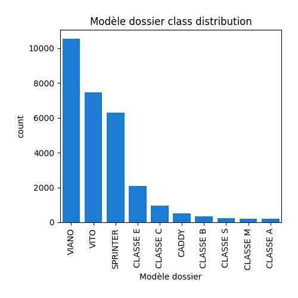

Exploratory Data Analysis
<< Go back
Feature : target
- Feature type : continous
- Missing : 0.0%
- Unique : 261
- Count :33608.0
- Mean :199.0420138062366
- Std :39.04384963194276
- Min :27.0
- 25%th Percentile : 187.0
- 50%th Percentile : 203.0
- 75%th Percentile : 221.0
- Max :572.0
Feature : Marque
- Feature type : categorical
- Missing : 0.0%
- Unique : 49
- Count :33608
- Unique :49
- Top :MERCEDES-BENZ
- Freq :28873
Feature : Modèle dossier
- Feature type : categorical
- Missing : 0.0%
- Unique : 430
- Count :33608
- Unique :430
- Top :VIANO
- Freq :10524

Feature : Modèle UTAC
- Feature type : categorical
- Missing : 0.0%
- Unique : 409
- Count :33608
- Unique :409
- Top :VIANO
- Freq :10524

Feature : Désignation commerciale
- Feature type : categorical
- Missing : 0.0%
- Unique : 2943
- Count :33608
- Unique :2943
- Top :VIANO 2.2 CDI
- Freq :4391
Feature : CNIT
- Feature type : text
- Missing : 0.0%
- Unique : 33131
- Count :33608
- Unique :33131
- Top :M10FATVP001P595
- Freq :15
Feature : Type Variante Version (TVV)
- Feature type : text
- Missing : 0.0%
- Unique : 23562
- Count :33608
- Unique :23562
- Top :263AXG1B05
- Freq :25
Feature : Carburant
- Feature type : categorical
- Missing : 0.0%
- Unique : 11
- Count :33608
- Unique :11
- Top :GO
- Freq :28358

Feature : Hybride
- Feature type : categorical
- Missing : 0.0%
- Unique : 2
- Count :33608
- Unique :2
- Top :non
- Freq :33410

Feature : Puissance administrative
- Feature type : discrete
- Missing : 0.0%
- Unique : 60
- Count :33608.0
- Mean :11.030320161866221
- Std :5.537156640514163
- Min :3.0
- 25%th Percentile : 9.0
- 50%th Percentile : 10.0
- 75%th Percentile : 11.0
- Max :81.0
Feature : Puissance maximale (kW)
- Feature type : continous
- Missing : 0.0%
- Unique : 215
- Count :33608.0
- Mean :124.89434658414663
- Std :48.972027259031705
- Min :40.0
- 25%th Percentile : 100.0
- 50%th Percentile : 120.0
- 75%th Percentile : 125.0
- Max :559.3
Feature : Boîte de vitesse
- Feature type : categorical
- Missing : 0.0%
- Unique : 13
- Count :33608
- Unique :13
- Top :M 6
- Freq :14479

Feature : Consommation urbaine (l/100km)
- Feature type : continous
- Missing : 0.008926446084265651%
- Unique : 199
- Count :33605.0
- Mean :9.712627585180778
- Std :2.3648938306287812
- Min :3.1
- 25%th Percentile : 8.8
- 50%th Percentile : 9.8
- 75%th Percentile : 10.7
- Max :41.1
Feature : Consommation extra-urbaine (l/100km)
- Feature type : continous
- Missing : 0.008926446084265651%
- Unique : 91
- Count :33605.0
- Mean :6.571178396072012
- Std :1.198034305081748
- Min :2.8
- 25%th Percentile : 6.3
- 50%th Percentile : 6.7
- 75%th Percentile : 7.1
- Max :14.9
Feature : Consommation mixte (l/100km)
- Feature type : continous
- Missing : 0.0%
- Unique : 132
- Count :33608.0
- Mean :7.720719769102595
- Std :1.59816184813969
- Min :1.2
- 25%th Percentile : 7.2
- 50%th Percentile : 7.7
- 75%th Percentile : 8.4
- Max :24.5
Feature : CO type I (g/km)
- Feature type : continous
- Missing : 0.5831944775053559%
- Unique : 576
- Count :33412.0
- Mean :0.15366539865916437
- Std :0.13920065635356219
- Min :0.005
- 25%th Percentile : 0.046
- 50%th Percentile : 0.09300000000000001
- 75%th Percentile : 0.223
- Max :0.968
Feature : HC (g/km)
- Feature type : continous
- Missing : 76.75255891454415%
- Unique : 71
- Count :7813.0
- Mean :0.030275873544093175
- Std :0.018388554393659225
- Min :0.008
- 25%th Percentile : 0.008
- 50%th Percentile : 0.031
- 75%th Percentile : 0.044000000000000004
- Max :0.14300000000000002
Feature : NOX (g/km)
- Feature type : continous
- Missing : 0.5831944775053559%
- Unique : 215
- Count :33412.0
- Mean :0.31366597330300494
- Std :0.4656989212719559
- Min :0.001
- 25%th Percentile : 0.158
- 50%th Percentile : 0.19699999999999998
- 75%th Percentile : 0.228
- Max :1.8459999999999999
Feature : HC+NOX (g/km)
- Feature type : continous
- Missing : 23.72946917400619%
- Unique : 178
- Count :25633.0
- Mean :0.22474843365973549
- Std :0.041898658548405535
- Min :0.046
- 25%th Percentile : 0.201
- 50%th Percentile : 0.22
- 75%th Percentile : 0.248
- Max :0.306
Feature : Particules (g/km)
- Feature type : continous
- Missing : 7.031064032373244%
- Unique : 16
- Count :31245.0
- Mean :0.000968511761881901
- Std :0.006588602532973322
- Min :0.0
- 25%th Percentile : 0.0
- 50%th Percentile : 0.001
- 75%th Percentile : 0.001
- Max :0.61
Feature : masse vide euro min (kg)
- Feature type : discrete
- Missing : 0.0%
- Unique : 803
- Count :33608.0
- Mean :2072.6989109735778
- Std :341.32466279861217
- Min :825.0
- 25%th Percentile : 1976.0
- 50%th Percentile : 2076.0
- 75%th Percentile : 2265.0
- Max :3115.0
Feature : masse vide euro max (kg)
- Feature type : discrete
- Missing : 0.0%
- Unique : 876
- Count :33608.0
- Mean :2171.5720959295404
- Std :409.1406478546089
- Min :825.0
- 25%th Percentile : 2070.0
- 50%th Percentile : 2185.0
- 75%th Percentile : 2355.0
- Max :3115.0
Feature : Champ V9
- Feature type : categorical
- Missing : 0.42846941204475125%
- Unique : 13
- Count :33464
- Unique :13
- Top :715/2007*692/2008EURO5
- Freq :19808
Feature : Carrosserie
- Feature type : categorical
- Missing : 0.0%
- Unique : 10
- Count :33608
- Unique :10
- Top :MINIBUS
- Freq :24615

Feature : gamme
- Feature type : categorical
- Missing : 0.0%
- Unique : 7
- Count :33608
- Unique :7
- Top :MOY-INFER
- Freq :15384

<< Go back